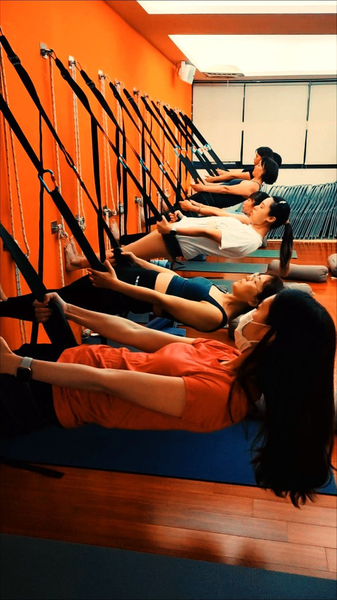

電腦族的脖子前傾，一天可以還原一點點嗎？

- 下班照鏡子發現下巴前凸、脖子像烏龜一樣往前伸？別慌張，多數電腦族是「姿勢性肌筋膜失衡」而非骨骼定型，是完全可逆的。
- 頭部每前伸 1 英吋（約 2.5 公分），頸椎承受的力矩暴增約 4.5 公斤；低頭 60 度時頸椎如同掛著一個 27 公斤的小學生。
- 還原公式是「鬆（胸小肌與枕下肌）＋ 練（深層頸屈肌收下巴）＋ 提醒（環境螢幕架設與定時中斷）」。
- 壁繩瑜伽提供肩胛與胸廓穩定支撐，在無重力代償下延展後頸；伴隨手臂發麻或抓握無力需優先尋求神經專科評估。
下班搭電梯照鏡子，突然發現自己的側面體態像隻探頭的烏龜——下巴不自覺往前探、後頸根部高高隆起、肩膀整個往前縮。你心頭一驚：「天啊，我的脖子是不是已經長歪、定型了？」先放輕鬆、深深吸一口氣——對於絕大多數天天坐在電腦前的上班族來說，這個問題比你想的更有希望，也完全是可以逐步調整回來的。
力學震撼彈：頭前傾 1 吋，頸椎多扛 4.5 公斤！
在頸椎生物力學模型中，成人的頭部重量約為 4.5 至 5.5 公斤（約 10 至 12 磅）。當頭部端坐在脊椎正上方時，重力由頸椎骨骼結構均勻吸收，周圍肌肉只需要出極少的力量維持平衡。
然而，當我們盯著螢幕、不知不覺將頭往前伸出時，力學槓桿原理會讓頸椎的受力成倍暴增：
- 頭部前伸 15 度：頸椎承受的等效重力增至約 12 公斤（27 磅）。
- 頭部前伸 30 度：頸椎負荷攀升至約 18 公斤（40 磅）。
- 頭部前伸 45 度：負荷高達約 22 公斤（49 磅）。
- 頭部前伸 60 度（常見低頭滑手機角度）：負荷高達驚人的 27 公斤（60 磅）！
想像一下：你整天打電腦時，脖子後方其實無時無刻不掛著一袋沉重的米、甚至相當於一個八歲小學生的重量！後頸的上斜方肌、提肩胛肌與頭夾肌整天像鋼索一樣被往外拉扯，難怪一到下午就痠痛難耐。
破除骨骼定型迷思：這是一場「肌力失衡的上交叉」
很多人擔心「我的脖子骨頭是不是定型長歪了」。事實上，這大多是標準的「上交叉症候群（Upper Crossed Syndrome）」：
- 過度緊縮短縮的肌肉群：
- 前側的胸大肌與胸小肌（把肩膀往前向內拉扯成圓肩）。
- 前頸兩側的胸鎖乳突肌（SCM）（把下巴往前拉）。
- 後腦下方的枕下肌群與上斜方肌（死命往後扯住頭顱不讓它掉下去）。
- 被動拉長且失憶無力的肌肉群：
- 深埋在頸椎前方、負責維持直立軸線的深層頸屈肌（頸長肌、頭長肌）。
- 後背負責把肩胛骨往下拉回中立的菱形肌、前鋸肌與下斜方肌。
這不是骨頭定型，而是兩組肌肉力量的「失衡拔河」。既然是肌肉張力與神經使用習慣造成的，只要給予正確的伸展與喚醒，它就具備高度的可塑性。
還原三步驟：鬆 ＋ 練 ＋ 提醒
步驟一：鬆（釋放緊縮短縮的煞車皮）
如果前面的胸肌和後面的枕下肌群像鐵絲一樣卡死，你光憑意志力把頭往後扯，只會造成腰椎超伸或頸椎關節劇烈擠壓。必須先透過溫和的胸廓伸展與後頸放鬆，把緊縮的組織長度還給身體。
步驟二：練（喚醒睡著的深層頸屈肌）
光放鬆還不夠，必須把前側的深層頸屈肌重新叫醒，讓它有力量在日常生活中主動把頭部留在中立軸線上。最安全有效的入門動作就是「微收下巴（Chin Tuck）」：坐正平視，用兩根手指輕推下巴水平向後平移（感覺後腦勺往牆壁貼），停留 5 個深呼吸，每天反覆累積。
步驟三：提醒（改善辦公人體工學）
再好的運動，也抵擋不住一天 8 小時低頭看筆電的摧殘。請檢視自己的工作環境：
- 將螢幕架高，讓螢幕頂端高度平齊於平視視線。
- 使用外接鍵盤與滑鼠，讓雙肘自然垂放在桌面上，手肘呈 90 度支撐。
- 設定鬧鐘，每工作 40 分鐘起身做一次擴胸與收下巴。
壁繩瑜伽能提供什麼獨特助力？
在徒手練習收下巴時，許多人常因為上背肌力不足而下意識聳肩或塌腰。壁繩瑜伽提供了完美的物理支撐：
- 懸掛骨盆與胸廓：繩帶給予脊椎穩固的對抗支點，讓胸腔在零代償的情況下徹底展開，自然拉長頸胸交界處。
- 重建垂直重力線記憶：利用壁繩的引導，讓學員在站立與懸掛中親身體會「頭頂向上延伸、下巴自然微收」的輕盈體感，將正確的中立記憶深植入神經大腦中。
醫療紅旗警訊！這些症狀請優先掛號專科
頭前傾若伴隨神經壓迫，不可隨意進行劇烈旋轉拉扯：
- 手臂神經根壓迫：單側肩膀或手臂出現劇烈麻痛、觸電感、或指尖感覺遲鈍。
- 肌肉無力徵兆：手部精細動作失靈（如拿不住筷子、扣不上襯衫鈕扣）。
- 頸髓病變警訊：走路腳步虛浮、有如踩在棉花上的漂浮感，伴隨大小便控制異常，需緊急就醫評估頸椎脊髓壓迫。
量化您的頭部前傾角度與肩線平衡
與其對著鏡子憑感覺猜測，AI 體態檢測能透過 2D 靜態影像為您標註耳垂與肩峰的水平偏移距離，由老師當面與您解析日常代償模式，規劃循序漸進的體態還原路徑。
預約首次 NT$299 AI 體態檢測（含老師當面解讀）結語：像存錢一樣，把脖子一天天請回來
烏龜頸不是一天造成的，它是數千個小時低頭工作的累積；同樣地，體態的還原也不需要奇蹟或猛烈的強求。它就像存錢一樣——今天提醒自己收三次下巴、明天把螢幕架高五公分、後天到教室在壁繩上把胸口好好打開一次。每天累積一點點中立空間，脖子自然會一天比一天更輕盈、更挺拔。
本文為頸椎生物力學與體態調整衛教知識分享，並非醫療診斷或治療承諾。若有頸部劇痛、手臂麻木或手部握力減退，請務必尋求神經外科、骨科或復健科專科醫師之專業診斷。
常見問題
頭前傾是骨頭已經長歪定型了嗎？真的可以透過練習改善嗎？
對於絕大多數長期久坐打電腦的族群而言，這屬於功能性肌筋膜失衡（上交叉症候群），並非骨骼結構變形。主要問題在於胸鎖乳突肌、枕下肌群短縮，以及深層頸屈肌長年缺乏活化。只要骨關節未完全沾黏，透過放鬆緊繃肌群、喚醒深層穩定肌力與環境調整，力線是可以逐步回正的。
頭部往前移對頸椎的負擔到底有多大？
在脊椎力學上，成人頭部自然重量約 5 公斤。頭部向前位移每多 1 英吋（約 2.5 公分），頸椎承受的力矩負擔便增加約 4.5 公斤。若前伸達 60 度低頭角度，頸椎承受的等效重量高達約 27 公斤，相當於一個小學生的重量整天掛在後頸上，極易加速椎間盤退化磨損。
辦公室電腦族該如何調整螢幕高度來預防脖子前傾？
黃金法則是：電腦螢幕的上緣高度應與平視視線平行，或稍微低約 10 至 15 度；螢幕與雙眼應保持一隻手臂長度（約 50 至 70 公分）。使用筆記型電腦者強烈建議外接螢幕支架與獨立鍵盤，避免整天低頭駝背操作觸控板。
收下巴（Chin Tuck）練習有什麼正確要領？為什麼有人做完反而脖子痛？
關鍵在於「水平向後平移」而非「低下頭看地板」。想像後腦勺沿著水平滑軌輕輕往後貼牆，感覺喉嚨前方深層肌肉微微收縮、後頸被拉長。若做成用力低頭壓下巴，只會折壓氣道並加重下頸椎壓力，反而適得其反。
出現哪些徵兆代表頸椎前傾已造成神經受壓，應立即就醫？
若脖子前傾伴隨單側手臂放射性麻痛、如觸電般傳導至指尖、手掌肌肉萎縮或無力（常掉筷子、扣釦子困難），或轉頭時突發天旋地轉，代表神經根已受到壓迫或椎動脈受牽拉，請務必優先掛號神經外科、骨科或復健科專科門診。